Lightning McQueen is a world-champion racer who’s riding high with five Piston-Cup wins under his hood. Suddenly, he finds himself faced with a new generation of racers who threaten not only his dominance in the sport—but the confidence that got him there. Determined to get back into the pole position, #95 must decide if his love for racing is enough to fuel the comeback of his life.


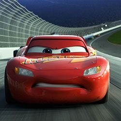
Cruz Ramirez is a tech-savvy, unconventional trainer at the Rust-eze Racing Center. She expertly arms the team’s talented rookies with cutting-edge tools to tear up the track—but she nearly stalls when Piston-Cup champion Lightning McQueen shows up. While she’d love to help him find his way back to the top, she knows the competition is faster than ever, and victory is all about speed—or is it?


Jackson Storm is fast, sleek and ready to win. A front-runner in the next generation of racers, Storm’s quiet confidence and cocky demeanor are off-putting—but his unmatched speed threatens to redefine the sport. Trained on high-tech simulators that are programmed to perfect technique and maximize velocity, Jackson Storm is literally built to be unbeatable—and he knows it.


Former Piston Cup team owner Smokey teamed up with the Fabulous Hudson Hornet back in the ‘50s. His gruff exterior and strong opinions served him well as crew chief—and he owns what’s arguably the best dang garage in town. He still wrestles with trusting his head or his gut, but when it comes to his friends—he’s all heart.


Passionate and fiery, Merida is a headstrong teenager of royal upbringing who is struggling to take control of her own witch. She feels most at home in the outdoors honing her impressive athletic skills as an archer and swordfighter, and racing across the magnificent Highland countryside with her faithful horse, Angus. With a spirit as vibrant as her untamed hair.


A vision of grace of character, Queen Elinor is fiercely dedicated to the well being of her family and kingdom. Elinor strives to instill in Merida the knowledge and manner of a royal, expecting complete commitment to Elinor’s standards. But her vision of her daughter’s future is at odds with Merida’s rebellious spirit and desire to forge her own path., which ultimately causes Elinor to face calamitous consequences.


King Fergus is a heroic warrior with a majestic bear cape, broad sword and a knobby peg leg – the result of his much-regaled skirmish with the demon bear Mor’du. His vendetta against the beast who took his leg makes Fergus a ferocious and determined bear hunter. His pride for his first-born daughter Merida is unmatched, and he has gifted her his great skill and passion for the sword and the bow.
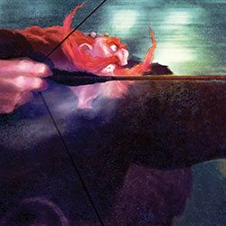

Identical triplets Harris, Hubert and Hamish are adorable, redheaded, and always ready to stir up a bit of mischief, especially if sweets are at stake. This troublemaking trio is particularly keen on sneaking through the secret passages of the castle, mysteriously appearing out of walls, and playing clever tricks on everyone, especially their father, King Fergus. They share an extra special bond with their big sister, Merida.


Deep in the overgrown Highland forest, a ramshackle blackhouse cottage is home to the Crafty Carver. This seemingly long-in-the-tooth crone specializes in the whittling of wooden bear trinkets, figurines and curios. When Merida sees through the guise and reveals her as the Witch she truly is, Merida begs for a magical solution to her problems. The Witch begrudgingly gives in, conjuring a haphazard spell with an obscure riddle.
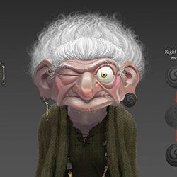


Woody is a traditional kind of toy, with his pull-string voice box and cowboy detailing. He has long enjoyed a place of honor as the favorite among six-year-old Andy's toys—until Buzz Lightyear crash-lands and shakes up his world.


This space ranger action figure has it all: a laser beam, karate-chop action, pop-out wings, and a belief that he's on a secret mission for Star Command. Much to Woody's chagrin, Buzz monopolizes Andy's attention and becomes an instant favorite with his toymates.


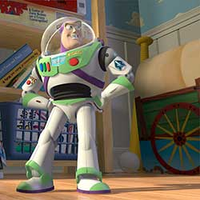
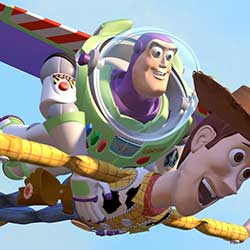
The piggy bank in the window knows everything. Or at least that's what Hamm would have everyone believe when he's sticking his snout into the day's affairs.
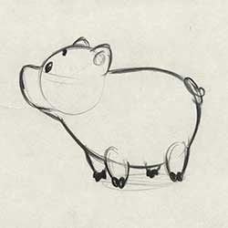
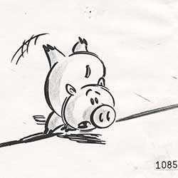
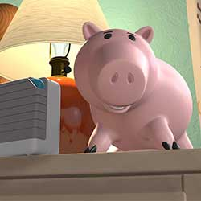
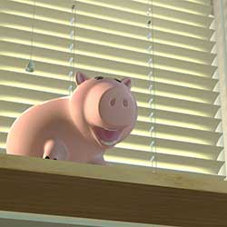
Mr. Potato Head has a chip on his shoulder, but you would too if your face kept falling off. His cynical take on life makes him the toy to question Woody's authority.
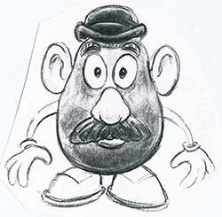


Rex is a neurotic and insecure 12-inch plastic dinosaur with a small-roar complex and limited upper-arm movement. With his tender heart and weak spine, this Tyrannosaurus is one of the most lovable toys of the bunch.


Everyone keeps telling Flik to stop questioning tradition and be a good worker ant, but he knows that's not his lot in life. Even when the going gets tough, this resourceful but misguided ant risks everything despite some major setbacks and the prevailing perception that he's a failure.


Princess Atta often seems aggravated, but you would too if you were ascending to the throne and had to deal with a mean freeloading grasshopper. It takes a few tries for Atta to realize the colony's courage and strength, and to learn to trust her instincts as a leader.
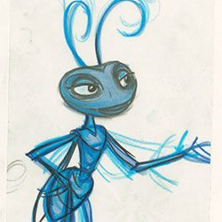

As the Queen's youngest daughter, Dot proves that size doesn't matter when it comes to being a heroine. The pint-sized princess learns to spread her wings and convinces Flik to return to save the colony.


The ant colony's miniature monarch has been around the island more than a few times and she's looking forward to retiring and letting Atta take over the throne.

A member of the circus crew, Francis is the misunderstood male ladybug. To compensate for his mistaken gender, he develops a macho attitude that can only be softened by Ant Island's young Blueberries troop.


This Bavarian caterpillar who can't stomach the idea of a battle is happiest when he's munching on food. For Heimlich, eating large doesn't guarantee a set of large wings—but he loves them just the way they are.
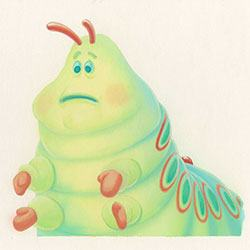
At first glance he looks like a menacing insect, but Dim has a heart of gold. The lovable rhino beetle appears as the ferocious star of P.T. Flea's circus act, even though he has an extremely low tolerance for pain.
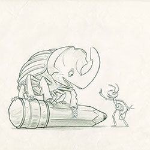

These Hungarian pill bugs don't speak a word of English, but it's no problem when they're getting shot out of a cannon or performing acrobatic routines that always end in fights.


Manny is a pompous praying-mantis magician who prays for the good old days when audiences responded to his act. His moth mate, Gypsy, requires all eyes on her lovely wings and helps Manny look good in their performances.


Her husbands keep dying on her, but that doesn't stop this widowed black widow spider from spinning a (sometimes) successful career as a circus performer—and unlikely "warrior bug."
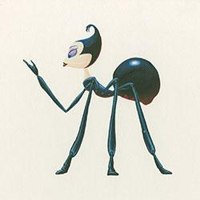


Slim is an intellectual walking stick who takes his acting a bit too seriously. He often ponders his fate and wonders if he'll ever be able to break out of his circus role as the stick.


He's a mean, lean eating machine and can squash an ant's head with his foot if the food's not on the offering stone. Hopper's tough exterior conceals an even tougher interior and a superior intellect.


Rats are no strangers to rejection, but mcQueen, a rat who longs to be a great chef, has more than the usual obstacles to overcome. His remarkable sense of smell and genius for combining flavors puts him head and shoulders above most human chefs. However, in the rat world he’s resigned to a life of being the “poison sniffer,” using his unique talent to pick out the safe garbage for his family to eat.
Mater is a good ol' boy tow truck with a big heart and a lovable laugh to match. Though a little rusty, he has the quickest towrope in Carburetor County and is always the first to lend a helping hand. He's the sweetest, most loyal guy in town and the first to befriend newcomer Lightning McQueen.


Sally is a beautiful 2002 Porsche 911 from California who grew tired of life in the fast lane and made a new start in the small town of Radiator Springs. Charming, intelligent, and witty, she is the town's attorney and the car most dedicated to one day getting Radiator Springs "back on the map."


Doc Hudson is a 1951 Hudson Hornet, a quiet country doctor with a mysterious past. A cornerstone of Radiator Springs, Doc runs the local medical clinic and serves as the town judge. But when Lightning McQueen rolls through town, Doc's old competitive engine gets revved up once more.

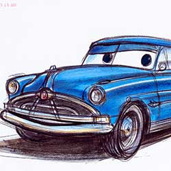


Luigi is a 1959 Fiat 500 who runs the local tire shop, Luigi's Casa Della Tires. Big-hearted, gregarious and excitable Luigi is assisted by Guido, a little Italian forklift, and together they serve up more than a new set of wheels for customers. Their positive energy and enthusiasm have a natural way of rubbing off on anyone who passes through their shop doors.


In the now-popular tourist destination of Radiator Springs, the rusty old tow truck Mater has a number of roles, including proprietor of Tow Mater Towing and Salvage, grand storyteller, and the heart and soul of the town. But Mater’s favorite title is best friend to Lightning McQueen. Mater values each and every dent he’s earned on his escapades with Lightning over the years.


Number 95 Lightning McQueen is still a hotshot race car, but his rookie days are past him. Now a permanent resident of Radiator Springs, Lightning has become a bona fide worldwide celebrity as winner of four Piston Cups.His off-season is unexpectedly cut short when Mater inadvertently prompts Lightning to enter the World Grand Prix, a high profile, three-part exhibition race that will take him around the globe.

Finn McMissile is a master British spy. Though charming and eloquent, it’s his stealth maneuvering, intelligence, and years in the field that enable him to thwart unexpected attacks from bad guys and make quick daredevil escapes.


Francesco Bernoulli grew up in the shadow of the famous Monza racecourse in Italy, where he and his friends would sneak onto the track and race the famous Pista di Alta Velocita bank turn. He was an instant winner on the amateur circuit and soon became an international Formula Racer champion. The ladies love Francesco’s open wheels, youngsters look up to his winning spirit, and fellow racers envy his speed.


Holley Shiftwell is a beautiful young British desk agent turned rookie field spy stationed in Tokyo. Well educated and sharp, she knows every trick in the book—or rather, she relies on every trick in the spy manual. She’s armed with the latest state-of-the-art spy equipment imaginable, from hidden cameras and concealed weapons to a telescoping utility arm and a holographic pop-up display.


Dory is a bright blue tang with a sunny personality. She suffers from short-term memory loss, which normally doesn’t upset her upbeat attitude—until she realizes she’s forgotten something big: her family. She’s found a new family in Marlin and Nemo, but she’s haunted by the belief that someone out there is looking for her.


Dory is on a mission to the California coast to track down her family, and Marlin and Nemo are there to help her. Nemo may just be a young clownfish with a lucky fin, but he wholeheartedly believes in Dory. And Marlin, who of course knows how it feels to lose family, realizes he has no choice but to pack up his nervous energy and skepticism and embark on yet another adventure.
Hank is an octopus. Actually, he’s a “septopus”: he lost a tentacle—along with his sense of humor—somewhere along the way. An accomplished escape artist with camouflaging capabilities to boot, Hank is the first to greet Dory when she finds herself in the Marine Life Institute. Hank is after one thing—a ticket on a transport truck to a cozy Cleveland facility where he’ll be able to enjoy a peaceful life of solitude.

Bailey is the Marine Life Institute’s resident beluga whale who is convinced his biological sonar skills are on the fritz. The good news—or bad news, depending on who you ask—is that doctors at the MLI can’t seem to find anything wrong with him. Bailey’s flair for the dramatic never ceases to push his neighbor’s buttons: whale shark Destiny can’t seem to get through to him.


Destiny may be a clumsy swimmer, but she has a big heart. She has a big everything, actually—whale sharks are the biggest fish in the sea. Destiny resides in the Marine Life Institute, where one day an oddly familiar blue tang named Dory falls into her pool. Destiny is admittedly embarrassed by her obvious lack of grace, a product of poor eyesight, but Dory thinks she swims beautifully.


The last to hatch among his siblings, 11-year-old Arlo has yet to make his mark on his family’s farm. Though he is eager to help out with chores, this sheltered Apatosaurus just can’t seem to get past his fear of everything.


Brave and selfless, Poppa is a devoted husband and father, working tirelessly to make a life for his family on their farm. He has a soft spot for Arlo, his small and fearful son, and takes special care of him as he grows up. A loving wife and mother, Momma is smart and quick-witted. She’s a hard worker with a lot of love for her family, and she keeps her children and their farm in order.
Spot is a wild, tough and tenacious human boy who has lived alone in the wilderness for much of his life. He speaks in only grunts and growls, but his strengths are clear: he’s fearless and confident.
Buck is Arlo’s brother: they’re the same age, but Buck is bigger, stronger and a little rambunctious. Arlo's sister Libby is a capable and willful girl who can plow a mean field.
“We wanted Buck and Libby to be more capable, more brave than Arlo,” says Story Supervisor Kelsey Mann. “Everything comes more easily, despite the fact that they’re all the same age.”


Pet Collector is a mysterious Styracosaurus who lives in the wilderness. Like Arlo, he harbors unreasonable fears. His ability to blend into his surroundings helps—along with an unusual (but not exactly fierce) collection of forest critters he’s recruited to protect him.

Nash, who isn’t the sharpest of spurs and has trouble keeping track of their herd, exhibits a mischievous charm and positive attitude that makes him good company out on the range.
Ramsey loves the challenge of driving a herd of longhorns with her father, Butch, and her little brother Nash. Ramsey has a lively, outgoing personality—she likes good jokes.


According to production designer Harley Jessup, the filmmakers did a deep dive into what’s known about the size of a real Apatosaurus in an effort to add authenticity to Arlo and his family. “We created a life-size printout of Arlo to help imagine his gigantic scale,” says Jessup.


Once the best-known, most popular superhero alive, Bob Parr is now fifteen years older and is bolder and heavier. As a claims adjuster at possibly the world’s worst insurance company, Insuricare, the former Mr. Incredible’s heroics are limited to helping people navigate the intricacies of the appeals system. Bob’s unhappiness has taken a toll and he and his family have become disconnected.
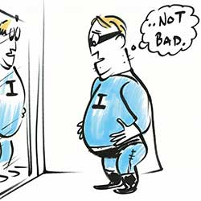
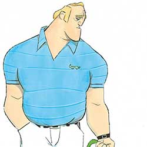
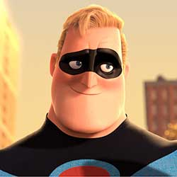
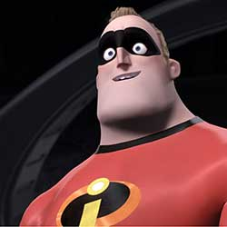
Helen Parr, the former super-stretching superhero, has adjusted to normal life, and is busily focused on caring for her three children. While she occasionally uses her amazing ability to stretch to meet the daily challenges of modern motherhood, she is careful to do so only behind the closed doors of their suburban home. She misses the old days, but doesn’t dwell on those times as she has a wonderful family.
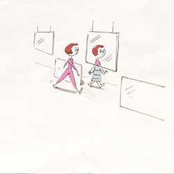
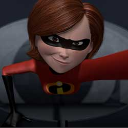
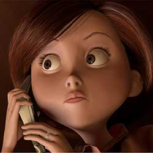
At age ten, Dash seems to be moving even when standing still. Full of restless energy, he has the power of super-speed – a power so useful for playing pranks that he has difficulty keeping it in check. Dash doesn’t understand why superheroes should hide their powers – why would they have them if they weren’t supposed to use them?
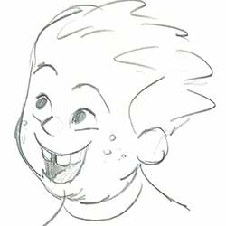
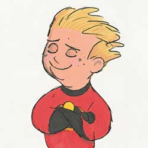
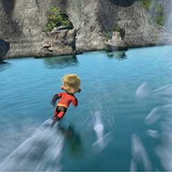
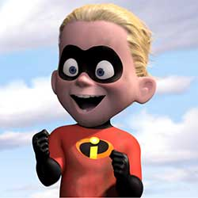
Violet Parr is, in many ways, a typical shy, insecure teenage girl stuck at the crossroads between child and woman. She, like her parents and brother Dash, has special powers, and it seems only right that hers allow her to turn invisible and protect herself with a secure force field. For what would be better for an awkward young woman but to be able to disappear from her problems at a moments notice?
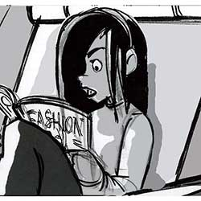
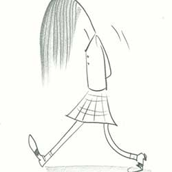


Jack-Jack is the black sheep of the family. He is nearly two years old, and it seems the only thing incredible that he can do is jabber in gibberish. He’s very good at that— as well as throwing food at dinnertime. Hey, that’s what being a baby is all about! But who knows, maybe someday…He is an Incredible after all…
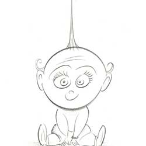

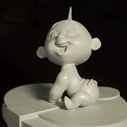
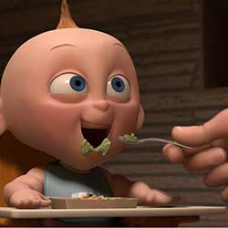
Lucius Best used to be known as the coolest superhero on the planet – and not just because he was best friends with Mr. Incredible. His style, wit and attitude made Frozone, as he was known then, the hippest of the lot. Of course his powers made him cool too, literally. Lucius’ ability to create ice from moisture in the air, made him the envy of every gadget-loving little boy.

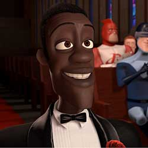


Syndrome wasn’t born with superpowers, but envied the attention and admiration the Supers received. Of all the Supers, Mr. Incredible embodied everything Syndrome desired: strength, fame, and popularity. Highly intelligent and cunning, Syndrome now spends his days on a remote island on the other side of the world inventing gadgets and robots to carry out a diabolical plot.
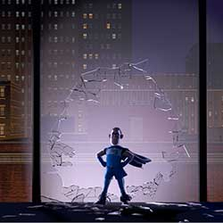
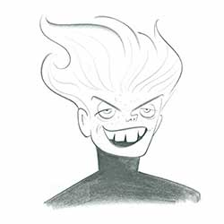
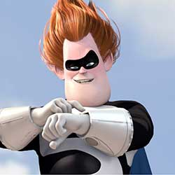
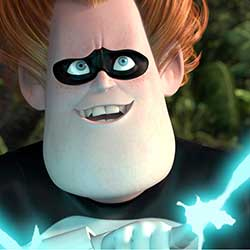
Brilliant and successful, Edna Mode got her start in the industry as the world’s leading superhero costume designer. With her now-mature sense of design, she remains the top designer in the field, taking her clothing designs to Milan, Paris and other internationally important fashion centers. However, E longs for the return of the superheroes, for a real design challenge.

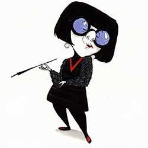
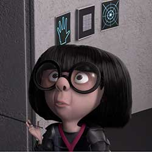
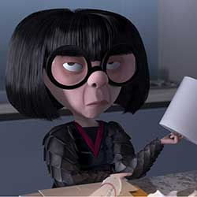
Joy’s goal has always been to make sure Riley stays happy. She is lighthearted, optimistic and determined to find the fun in every situation. Joy sees challenges in Riley’s life as opportunities, and the less happy moments as hiccups on the way back to something great. As long as Riley is happy, so is Joy.


None of the other Emotions really understand what Sadness’s role is. Sadness would love to be more optimistic and helpful in keeping Riley happy, but she finds it so hard to be positive. Sometimes it seems like the best thing to do is just lie on the floor and have a good cry.


Anger feels very passionately about making sure things are fair for Riley. He has a fiery spirit and tends to explode (literally) when things don’t go as planned. He is quick to overreact and has little patience for life’s imperfections.


Disgust is highly opinionated, extremely honest and prevents Riley from getting poisoned – both physically and socially. She keeps a careful eye on the people, places and things that Riley comes into contact with – whether that’s broccoli or last year’s fashion trend. Disgust always has the best of intentions and refuses to lower her standards.

Fear’s main job is to protect Riley and keep her safe. He is constantly on the lookout for potential disasters, and spends time evaluating the possible dangers, pitfalls and risk involved in Riley’s everyday activities. There are very few activities and events that Fear does not find to be dangerous and possibly fatal.


Riley Andersen is an eternally happy kid, at least until she turns eleven and her dad gets a job across the country, forcing the family to relocate to San Francisco. As she struggles to navigate a new home and school, Riley experiences an unfamiliar mix of emotions.

With the trunk of an elephant, the tail of a cat, and body of cotton candy, Bing Bong is Riley’s imaginary friend. (You have to remember, when Riley was three animals were all the rage.) Unfortunately, he’s been out of work since Riley turned four, and he’s desperate to not be left behind as Riley grows up.


Sulley's scare assistant, best friend, and roommate doesn't want any interruptions in his life—especially in his relationships. Although Mike thinks Boo is a "killing machine" at first, he later finds she's a great audience for his natural comedic talent.


James P. “Sulley” Sullivan may be the most celebrated Scarer in Monstropolis, but that doesn't make him mean. When the softhearted monster has to care for Boo, he discovers that love and laughter are more powerful than making kids scream.
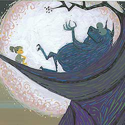
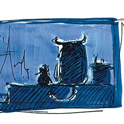

Boo has a vocabulary of about three words, but that doesn't stop this curious human girl from stealing Sulley's heart and overcoming her fear of Randall.

Able to scare even his co-workers with his chameleon abilities, Randall is one of the most wicked monsters in Monstropolis. His plan to capture the all-time scare record only scratches the surface of his sinister agenda.


Monsters, Inc. has been in the Waternoose family for generations, and Henry J. Waternoose III will do anything to beat the scream shortage and make his company profitable again.


Dispatch Manager Roz may be slow moving and slow talking, but the quick-witted slug has her eye on everything—including Mike Wazowski’s lack of paperwork. She's a No. 1 nut in Mike's book and a No. 1 boss to others.


The factory's one-eyed, snake-haired receptionist must put her birthday celebration on hold as she gets caught in the middle of Sulley and Mike's crazy predicament. Luckily, her love for Mike prevails and she comes to his rescue.

Mike Wazowski’s lifelong dream is to become a Scarer at Monsters, Inc.—and he’s sure he knows just how to do it. Ever since he was a young monster, Mike’s had his eye on Monsters University, home of the world’s top Scare Program. Now a freshman and hopeful scare student, he’s well versed in the rich history, theory and technique required to reach his goal.


When it comes to scaring, Sulley’s a natural—his abundant size, fierce roar and family legacy of a long line of high-achieving Scarers make him a shoo-in for the esteemed Scare Program at Monsters University. But from the moment the overly confident monster, he learns the hard way that his unfettered talent and family ties can only get him so far.


Monsters University freshman Randy Boggs has big aspirations for college life. The peculiar lizard-like monster with his host of gangly arms and legs plans to major in Scaring and lead an active social life filled with fun, friends and fraternity parties. If only he could get his embarrassing disappearing habit under control, he’d be good to go.


To Dean Hardscrabble, there are scary monsters and there are all other monsters. It’s no surprise she feels this way—she is, after all, a legendary Scarer and Dean of the School of Scaring at Monsters University. Aspiring Scare students must be up for the challenge to impress her, though she is convinced that her assessment of who is truly scary and who is not is never wrong.


Scott Squibbles gives new meaning to the term “undeclared.” A sophomore whose dream of becoming a Scarer was squashed in his first year at Monsters University, “Squishy” is a bit of a wide-eyed wanderer—small, sweet, naïve and quiet—who, not surprisingly, still lives with his doting mother.


Faced with the realities of the economic downturn, Midwestern sales monster Don Carlton finds himself going back to school to learn new skills and pursue a dream career in Scaring. One of Monsters University's “mature” students and a founding member of the Oozma Kappa fraternity, Don brings his honest hardworking spirit to their endeavors.


When it comes to Terri and Terry, it's hard not to ask, “Are two heads really better than one?” These bickering brothers have little in common: Terri with an “i” is a real romantic who's quick to spot the silver lining in any situation, while older brother Terry with a “y” sports a more cynical outlook on life.


The ultimate free spirit, Art is a mysterious monster with a questionable background. By far the strangest member of the Oozma Kappas, Art bowls over the competition-sometimes literally-with his unique dexterity and wild-card ways. Nothing is scarier than the unpredictable, especially when it comes to this furry ball of bad.


Sheltered deep within The Great Barrier reef, safe inside his anemone home, lives Marlin. After losing his wife and family to the ocean, Marlin is left alone to raise his only surviving child, Nemo. He vows never to let anything happen to his son. A loving and responsible father, Marlin keeps his noble promise throughout Nemo’s early years.


Nemo is a curious and impressionable six-year-old, only child who lives with his overprotective, single-parent father, Marlin. Having led a sheltered life, Nemo brims with the excitement of starting school and finally seeing the wonders of the Great Barrier Reef. Despite being born with a withered fin, Nemo yearns for adventure, and as fate takes him far from home, he learns he is capable of doing great things.

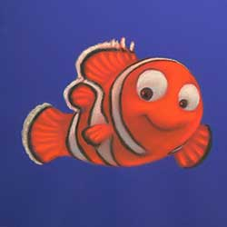


Throughout the vast ocean you will not find a fish more hospitable, more friendly, or more sociable than Dory. She would love to chat with you all day and tell you her life story, but she can’t. Dory suffers from short term memory loss. Dory is the aquatic Good Samaritan who offers to help Marlin on his journey to find his son. She is certainly an odd partner.


Gill is the maverick of the dentist’s office fish tank. He is the leader of an eclectic gang of fish, who hang on his every word and are drawn to his magnetic personality. This tough, scarred, one-finned fish was raised in the ocean, but taken at a young age to live in a tank. Surrounded by fish who have spent their entire lives in “the box,” Gill alone feels the pull to be free. Though he dreams of one day breaking out and returning to the ocean.

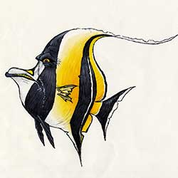

No matter where you're from—the ocean, eBay, Pet Palace, or mail order—being stuck in a kitschy dentist's aquarium can do things to a fish. Led by escape artist Gill, Peach, Bloat, Gurgle, Deb, Bubbles, and Jacques make life livable with tiki-inspired tank rituals, all the while dreaming of getting back into the Big Blue.


Bruce, Anchor and Chum are mates. Anchor is cynical; he hates dolphins. Chum is hyperactive; he can’t keep still. Bruce is the jolly leader of the pack. All three are members of a Fish-Eaters Anonymous Group, and are tormented by their natural urge to eat fish and their resulting unpopularity amongst the general ocean population.
Crush and his offspring Squirt know how to chill and go with the flow, especially the one created by the East Australian Current. The two have a righteous bond that's totally sweet. After 150 years of living in the ocean, Crush knows a thing or two about being a good parent.


Rats are no strangers to rejection, but Remy, a rat who longs to be a great chef, has more than the usual obstacles to overcome. His remarkable sense of smell and genius for combining flavors puts him head and shoulders above most human chefs. However, in the rat world he’s resigned to a life of being the “poison sniffer,” using his unique talent to pick out the safe garbage for his family to eat.


Linguini, a timid and well-meaning young man, is the new garbage boy at Gusteau’s. After a series of ill-fated jobs, Linguini is desperate to hold onto this one, which he sees as his last hope. A chance encounter with Remy thrusts Linguini into a highly unusual “ghost-cooking” relationship, in which he provides the gangly brawn for Remy’s culinary brains.


Colette is the toughest chef and the only female in the kitchen at Gusteau’s. Her grit, talent, and intimidating air have brought her far, but years of climbing the ladder in the male-dominated world of haute cuisine have made her wary and self-contained. At first, she is exasperated at being assigned to babysit Linguini as he begins his trial period as a chef.

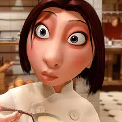

The late Auguste Gusteau, France’s all-time greatest culinary genius, is the author of Anyone Can Cook, the cookbook that inspires Remy's dream of becoming a chef. Gusteau's Paris restaurant became a landmark on the strength of his imaginative vision and masterful preparation, which simultaneously honored and played with the traditions of French cuisine.


Emile, Remy’s little brother, is a rat’s rat—a little overweight and good-natured, he loves life and all things edible and inedible. He doesn’t always understand the finer points of his brother’s obsession with good food, but he is always ready to support Remy on one of his harebrained errands or cheer him up when he's feeling low.
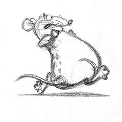

Anton Ego, the most powerful food critic in Paris, can make or break a restaurant with a single review. The sight of his dour, colorless, unsmiling face strikes fear into the heart of even the most complacently successful of culinary celebrities. Chefs have become so afraid of displeasing “The Grim Eater,” as he is commonly known, that no one dares to change a menu without his blessing.


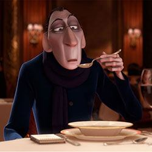
Of all Andy's toys, Woody seems to be the one who most questions his existence, whether it's as Andy's favorite, a toy destined for the landfill, or a hot collectible. Luckily, Woody comes to his senses before choosing to retire to a museum in Japan.


The toy gang's fearless Space Ranger has come down to Earth a bit since his last outing. In fact, Buzz finds himself in an ironic predicament when he must explain to a store display Buzz that they're "just toys."


It's no wonder this cowgirl gets the blues. Her beloved owner gave her up to charity, she was imprisoned in a dark storage box for years, and now a cowboy from her past is asking her to take risks just when life was starting to get easy. But, Jessie's a toy at heart and would do anything to give joy to a little girl again.


This toy horse rides like the wind, especially when it's Woody giving the command. In a 21st-century real-life version of the 1950s TV episode "Woody's Finest Hour," Bullseye must gallop like crazy to rescue Jessie and Woody from a speeding plane.
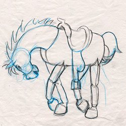

Mr. Potato Head®'s "sweet potato" lives up to her nickname as an affectionate and lovingly overprotective toy. She puts her spud's storage compartment to good use, making sure he has his "angry eyes" handy for the rescue mission, just in case.


Every toy's worst nightmare has happened to this broken squeak-toy penguin. Relegated to the dusty top shelf in Andy's room, Wheezy finds he's got a friend in Woody, who risks life and limb to come to his pal's res


Spending a lifetime on a dime-store shelf while every other toy in the Roundup Gang gets sold can make a toy bitter. When the Prospector's waiting in boxed "mint condition" finally pays off, he won't let anything keep him from immortality.


Woody is a cowboy sheriff who proclaims his signature catchphrases from the 1950s TV show Woody’s Roundup every time his pull-string is pulled. He’s always been Andy’s favorite toy. Even though his owner is now grown, the loyal sheriff Woody maintains a steadfast belief that Andy still cares about his toys.


Buzz Lightyear is a heroic space ranger action figure, complete with laser beam, karate-chop action, and pop-out wings. Buzz is a boy’s dream toy who becomes a quick favorite of young Andy and the closest of buddies with Woody. While Buzz’s sole mission used to be defeating the evil Emperor Zurg, what he now cares about most is keeping his toy family. Buzz’s new mission is sidetracked along the way.


Lotso is a jumbo, extra-soft teddy bear with a pink and white plush body and a velvety purple nose. This lovable bear ranks fuzzy heads and shoulders above other teddy bears because he smells like sweet strawberries. With a smile that will light up your child’s face and a belly just asking to be hugged, Lotso Bear is sure to become a bedtime necessity. Stain resistant. Spot clean plush surface with a damp cloth.


Created to be loved by generations, Andy’s toys have features that feed imaginations: the beautiful stitching on Jessie and Bullseye can survive the roughest of play; the durable pieces of Mr. and Mrs. Potato Head® offer endless combinations; the tireless spring of Slinky® Dog keeps his stretch; the pose-able limbs of Rex give him different looks; Hamm holds an appetite for saving; and the collectible Aliens emit mysterious calls.


Andy—Buzz and Woody’s kind, imaginative young owner—is now nearly 18 years old and just days away from heading to college. His bedroom walls, once covered with Buzz Lightyear posters, are now plastered with images of sports cars, rock bands, and skateboarders. Although Andy no longer brings his old toys out from the chest for playtime, he hasn’t been able to bring himself to get rid of them.

Bonnie is a 4-year-old girl who goes to Sunnyside Daycare. Although shy when around many adults, she is full of energy and creativity. She likes her pink tutu with yellow boots and a blue backpack. She's filled with imagination that helps her create endless new games and scenarios with her toys. She can never have too many toys because those that she has will always be loved, well cared for, and—best of all—played with.


Carl Fredricksen is not your average hero. He's a retired balloon salesman who, at the age of 78, is forced to leave the house he and his late wife Ellie built together. But instead of moving into the old folks' home, Carl takes action. He ties thousands of balloons to the roof, lifts the house into the air, and sets off toward South America, finally fulfilling the promise he made to his wife so many years before.


Russell is an enthusiastic and persistent 8-year-old Junior Wilderness Explorer from Tribe 54, Sweat Lodge 12. Armed with a backpack laden with official Wilderness Explorer camping gear, Russell is ready for the wilderness! There's just one catch: he's never actually left the city. All his knowledge of the outdoors comes from books, and his sole camping experience was in his own living room.


Dug is a lovable golden retriever living in the wilds of Paradise Falls as part of the dog pack searching for a rare flightless bird. Like the rest of his pack, Dug is outfitted with a remarkable high-tech collar that translates his thoughts into speech. But Dug is mocked as the nerd of the pack. Sent into the jungle on a "special" mission, Dug accidentally succeeds when he discovers the bird following Carl and Russell.


This bird is hidden from the world in remote Paradise Falls habitat. Very few know that this scientifically invaluable creature exists, but Carl and Russell stumble upon the bird, and Russell names her Kevin after he discovers they share a sweet tooth. Kevin and Russell bond instantly, and despite the bird's propensity to swallow Carl's walker, Kevin joins the latest and most unlikely carl's pack.

In 1930s, rich, clever, and handsome muntz is a beacon of hope for a down-and-out American public. He inspires his biggest fans, youngsters Carl and Ellie, to parrot his famous mantra "adventure is out there!" Traveling the globe many times over in his massive self-designed airship, he discovers the world's treasures: priceless historic relics, amazing scientific discoveries, and exotic flora and fauna never before seen.


Deep in the jungles of Paradise Falls resides a dog pack on a mission to capture a rare bird that their master is pursuing. Just like their rejected comrade Dug, all the pack dogs have high-tech collars that give them unusual abilities especially designed for sinister hunting expeditions, including GPS tracking and translating their thoughts into speech. Alpha, the pack leader, is a black-as-night Doberman Pinscher.
Ellie is an exuberant, adventurous girl who dreams of exploring the world. She and Carl first bond over their shared admiration for legendary explorer Charles F. Muntz. They pledge to travel together to Paradise Falls—the world's tallest waterfall, deep in the South American rainforest. As the couple settle into their married life, their grandiose plans are set aside as they navigate the ups and downs of their everyday lives.

WALL•E (Waste Allocation Load Lifter Earth-Class) is the last robot left on Earth, programmed to clean up the planet, one trash cube at a time. However, after 700 years, he’s developed one little glitch—a personality. He’s extremely curious, highly inquisitive, and a little lonely.

EVE (Extra-Terrestrial Vegetation Evaluator) is a sleek, state-of-the-art probe-droid. She’s fast, she flies, and she’s equipped with a laser gun. EVE, also called Probe One by the captain of the Axiom (the enormous luxury mother ship), is one of a fleet of similar robots sent to Earth on an undisclosed scanning mission.


M-O (Microbe-Obliterator) is a cleaner-bot programmed to clean anything that comes aboard the Axiom that is deemed a “foreign contaminant.” M-O travels speedily around the Axiom on his roller ball, cleaning the dirty objects he encounters.

Auto is the Axiom’s autopilot, who has piloted the ship through all of its 700 years in space. A carefully programmed robot in the form of the ship’s steering wheel, Auto’s manner is cold, mechanical, and seemingly dutiful to the captain. Unknown to all the Axiom crew, a hidden mandate exists in Auto’s programming.


Captain is the current commander of the Axiom. His uneventful duties are simply checking and rechecking the ship’s status with Auto, the autopilot. When he is informed of a long-awaited discovery by one of the probe-droids, he discovers his inner calling to become the courageous leader he never could have imagined and plots a new course for humanity.